A Mach 5 stream turns 5° at a compression corner and turns back at an expansion corner: an oblique shock and a Prandtl-Meyer fan. The case runs with shockFluid on a Gmsh mesh, and every downstream property is checked against theory on three meshes.
OpenFOAM · Flujo compresible · Tutorial 1.1
La rampa de compresión y expansión
Una corriente a Mach 5 gira 5° en una esquina de compresión y regresa en una de expansión: un choque oblicuo y un abanico de Prandtl-Meyer. El caso corre con shockFluid sobre una malla de Gmsh, y cada propiedad aguas abajo se compara con la teoría en tres mallas.
OpenFOAM · Kompressible Strömung · Tutorial 1.1
Die Kompressions-Expansions-Rampe
Eine Mach-5-Strömung wird an einer Kompressionsecke um 5° umgelenkt und an einer Expansionsecke zurückgedreht: ein schräger Verdichtungsstoß und ein Prandtl-Meyer-Fächer. Der Fall läuft mit shockFluid auf einem Gmsh-Netz, und jede Größe stromab wird auf drei Netzen mit der Theorie verglichen.
Estimated reading: 60 minLectura estimada: 60 minLesedauer: ca. 60 minLevel: undergraduateNivel: licenciaturaNiveau: BachelorVerified on OpenFOAM 12 (blueCFD-Core 2024), Gmsh 4.15.2 and ParaView 5.11.2Verificado en OpenFOAM 12 (blueCFD-Core 2024), Gmsh 4.15.2 y ParaView 5.11.2Geprüft mit OpenFOAM 12 (blueCFD-Core 2024), Gmsh 4.15.2 und ParaView 5.11.2
Full English translation in preparation. Each section below carries a summary of its content; the complete text, figures and tables are available in the Spanish version, which the ES button above selects.
Run a supersonic, inviscid case in OpenFOAM 12 (blueCFD-Core 2024 on Windows) from a Gmsh mesh; compute by hand every property behind an oblique shock and a Prandtl-Meyer fan; read the same properties from files that OpenFOAM writes; and judge the numerical solution with a three-mesh convergence study, including why the time step matters.
The problem
What is simulated
A flat plate, a 1 m ramp at 5° and a 1 m plateau, in a domain 1 m high; free stream at Mach 5 of the 'normalised gas' of the wedge15Ma5 tutorial. Region 2 lies behind the shock, region 3 behind the fan; the two do not meet inside the domain.
The theory
The theory the simulation must reproduce
The θ-β-M relation gives β = 15.07°; the normal-shock relations with Mn1 = M1 sin β give p, T, ρ and M in region 2; the Prandtl-Meyer function gives M3 = 4.98 and isentropic relations the rest. The fan brings the pressure back to p1, but not the total pressure: p0 drops 2.07 % across the shock and stays there.
Step by step
From the mesh to the results
In the blueCFD-Core terminal (a bash shell): add Gmsh to the PATH, which the terminal starts without, mesh with gmsh -setnumber d, convert with gmshToFoam, set the patch types with foamDictionary, check with checkMesh, run foamRun and open paraFoam. ./Allrun does all of it in one command.
The case
The case, file by file
Every file of the case, reproduced in full: the parametric rampa.geo; the normalised gas (molWeight 11640.3 and Cp 2.5 give γ = 1.4 and a = 1, so U = 5 means Mach 5); supersonic inlet and outlet, slip wall and symmetry plane; the Kurganov flux with van Leer reconstruction; the adjustable time step with maxCo 0.2; and three functions of our own that average each region and sample two lines.
Results
Looking at the results in ParaView
paraFoam, Apply, the last time step, the −Z view; the pressure and Mach fields; and Plot Over Line along y = 0.2 m with only p shown, as a visual check of the shock and the fan.
Worked example
Validation and mesh convergence
The three meshes against theory for fifteen quantities. On the finest mesh every quantity is within 0.25 % except the total pressure of region 3 (−0.60 %). That error halves with each refinement, and a first-order Richardson extrapolation recovers the theory to 0.005 %: the shock loss is physical, the extra entropy of the scheme is proportional to the cell size.
Common errors
What goes wrong, and what OpenFOAM says
A mesh too coarse across the shock layer; maxCo 0.5, which leaves spurious waves and blows up the fine mesh with a floating-point exception; the stock maxDeltaT of 1e-06; patch names or types that do not match (with the exact messages); Gmsh missing from the blueCFD PATH; region points outside the mesh; and OpenFOAM's totalPressureCompressible, which is the incompressible total pressure.
Suggested exercise
The 10° ramp
Repeat the study with a 10° ramp: β = 19.38°, p2/p1 = 3.04 and a total-pressure loss of 12.8 %, large enough to see that the fan does not undo the shock. Then find the largest turn Mach 5 admits before the shock detaches (41.1°).
Appendix
Where the formulas come from
The derivation of the θ-β-M relation from the normal-shock relations, of the Prandtl-Meyer function from an infinitesimal turn, and of the normalised gas.
Sources
References
Anderson's Modern Compressible Flow and NACA Report 1135 for the theory; the OpenFOAM 12 sources and the papers behind the Kurganov-Tadmor flux and the van Leer limiter for the numerics; Roache for grid-refinement studies.
Objetivos de aprendizaje
Qué se debe poder hacer al terminar
Una corriente a Mach 5 se encuentra una rampa de 5°. En la esquina de compresión nace un choque oblicuo; en la de expansión, un abanico de Prandtl-Meyer. Los dos fenómenos tienen solución exacta, de modo que el caso sirve para dos cosas a la vez: aprender a correr un caso compresible en OpenFOAM y, sobre todo, aprender a juzgar si lo que calcula es correcto.
Calcular a mano todas las propiedades detrás de un choque oblicuo y de un abanico de Prandtl-Meyer: presión, temperatura, densidad, número de Mach, velocidad, dirección del flujo y presión total.
Llevar una malla de Gmsh a OpenFOAM con gmshToFoam y corregir los tipos de frontera que deja.
Correr shockFluid en blueCFD-Core 2024 (OpenFOAM 12) en Windows, desde su terminal.
Leer los archivos de un caso compresible: el gas normalizado, las condiciones de frontera supersónicas, el esquema de Kurganov y el paso de tiempo.
Hacer que OpenFOAM escriba en archivos las cifras de la validación, en lugar de leerlas en una imagen.
Hacer un estudio de convergencia de malla con tres mallas y leer lo que dice: qué converge, a qué ritmo y qué error queda.
Qué hace falta. blueCFD-Core 2024 (bluecfd.github.io/Core), que instala OpenFOAM 12 para Windows y trae ParaView 5.11.2; Gmsh 4.15.2 (gmsh.info), el archivo comprimido para Windows, descomprimido en una carpeta cualquiera; el caso, rampa.zip, cuyos archivos se reproducen completos en la sección «El caso, archivo por archivo»; y una calculadora u hoja de cálculo para la teoría. No hace falta programar.
De dónde sale este tutorial. El punto de partida fue una adaptación del tutorial wedge15Ma5 de OpenFOAM, hecha por un profesor de la materia para una rampa de 5°, cuyos resultados no coincidían con la teoría. La causa estaba en la malla, no en el solver (sección «Errores frecuentes»). El caso se rehizo y se validó en OpenFOAM 13 (openfoam.org, en Linux) y en OpenFOAM 12 (blueCFD-Core, en Windows), con diferencias entre las dos versiones menores al 0.1 %. Todas las cifras y capturas de esta guía son de OpenFOAM 12, que es lo que usan los alumnos.
El problema
Qué se va a simular
El dominio es un canal bidimensional: una placa plana, una rampa que sube 5° y una meseta (figura 1). Por la izquierda entra aire a Mach 5, paralelo a la placa. El flujo no tiene viscosidad —se resuelven las ecuaciones de Euler—, así que no hay capa límite: la pared sólo obliga al flujo a seguirla.
Figura 1.La rampa y sus tres regiones. Placa plana de 1 m, rampa de 1 m a 5° y meseta de 1 m, con el dominio de 1 m de alto (línea discontinua gris). El choque sale de la primera esquina a 15.07°; el abanico, de la segunda, entre las rectas azules discontinuas (a 17.86° y 11.58° del eje x). Sombreadas, las regiones 2 y 3 de la teoría. Los nombres de las fronteras son los que usan Gmsh y OpenFOAM.
Región 1, la corriente libre. Hasta la primera esquina, en x = 1 m, nada perturba el flujo.
Región 2, detrás del choque. En la esquina de compresión la pared gira 5° hacia el flujo. A velocidad supersónica, la información no puede viajar aguas arriba para avisar que viene una desviación: el flujo gira de manera abrupta, a través de un choque oblicuo que nace en la esquina con un ángulo β = 15.07°. Detrás del choque el flujo es uniforme, paralelo a la rampa, más lento, más denso, más caliente y a mayor presión.
Región 3, detrás del abanico. En la segunda esquina, en x = 1.996 m, la pared vuelve a la horizontal y el flujo gira de regreso, ahora alejándose de sí mismo. Ese giro no es brusco: ocurre a través de un abanico de ondas de expansión que salen de la esquina, entre dos rectas a 17.86° y 11.58° del eje x. Detrás del abanico el flujo vuelve a ser horizontal y uniforme.
El choque sale del dominio por la salida, a y = 0.54 m, y el abanico no lo alcanza: la primera onda del abanico lo cruzaría en x ≈ 5.4 m, fuera del dominio. Por eso cada región queda uniforme y la teoría se puede aplicar por separado a cada una. El techo, a 1 m de la placa, queda lejos de los dos fenómenos.
Dato
Valor
Dónde se fija
Número de Mach de la corriente libre, \(M_1\)
5
0/U: velocidad (5 0 0)
Presión y temperatura de la corriente libre
\(p_1 = 1\), \(T_1 = 1\)
0/p, 0/T
Relación de calores específicos, \(\gamma\)
1.4
constant/physicalProperties
Ángulo de la rampa, \(\theta\)
5°
rampa.geo: th
Placa plana antes de la rampa
1 m
L1
Largo de la rampa, medido sobre ella
1 m (avanza 0.9962 m en x y sube 0.0872 m)
Lr
Meseta después de la segunda esquina
1 m (la salida queda en x = 2.996 m)
L3
Altura del dominio sobre la placa
1 m
H
Tamaño de celda
0.02, 0.01 y 0.005 m
d, desde la terminal
Tabla 1.Datos del caso. La geometría es la del caso que el profesor adaptó del tutorial wedge15Ma5 de OpenFOAM, con un dominio más bajo; el gas es el «gas normalizado» de ese tutorial («El caso, archivo por archivo»).
La malla es 2D en el sentido de OpenFOAM: una sola capa de celdas de 1 cm de espesor, con las caras de adelante y atrás marcadas como empty. Las celdas son cuadradas en el plano, de lado d; el estudio de convergencia usa d = 0.02, 0.01 y 0.005 m.
La teoría
La teoría que la simulación tiene que reproducir
La validación compara la simulación con una solución que se calcula a mano, con las relaciones de flujo compresible de cualquier curso de aerodinámica (Anderson, 2003; Ames Research Staff, 1953). Aquí están las fórmulas y el orden en que se usan; de dónde salen está en el apéndice. El gas es ideal y calóricamente perfecto, con γ = 1.4.
El choque oblicuo
El ángulo del choque depende del número de Mach y de la desviación, pero la relación no se puede despejar:
β se encuentra probando valores, con la herramienta «Buscar objetivo» de una hoja de cálculo o con una calculadora de flujo compresible. Para una desviación dada hay dos soluciones; la que aparece en una esquina con una desviación moderada es la débil, la de menor β, que está entre el ángulo de Mach, \(\mu_1 = \arcsin(1/M_1)\) = 11.54°, y el β de la desviación máxima. Con M₁ = 5 y θ = 5°, β = 15.073°.
Un choque oblicuo es un choque normal para la componente de la velocidad perpendicular a él; la componente paralela no cambia. Con el número de Mach normal,
El número de Mach detrás del choque sale de su componente normal, que se mide respecto al choque, no respecto a la rampa; por eso se divide entre el seno de β − θ:
Un proceso sin pérdidas —isentrópico— la conserva; un choque la reduce, porque genera entropía. Es la medida más directa de cuánta entropía generó el flujo.
El abanico de Prandtl-Meyer
Una expansión supersónica sí es isentrópica. El número de Mach después de un giro θ sale de la función de Prandtl-Meyer, que mide el ángulo que ha girado un flujo que partió de Mach 1:
De nuevo, M₃ se encuentra probando valores. Como el proceso es isentrópico, las demás propiedades salen de las relaciones isentrópicas entre las regiones 2 y 3:
La magnitud de la velocidad, por último, es el número de Mach por la velocidad del sonido, que es proporcional a \(\sqrt{T}\): \(|U|/|U_1| = (M/M_1)\sqrt{T/T_1}\).
Los números
La tabla 2 da el resultado de cada paso, en orden, y la tabla 3 reúne las propiedades de las dos regiones. Son las cifras contra las que se valida.
Paso
Qué se calcula
Resultado
1
\(\beta\) de la relación \(\theta\)–\(\beta\)–\(M\), solución débil
15.073°
2
\(M_{n1} = M_1 \sin\beta\)
1.3002
3
\(p_2/p_1\), \(\rho_2/\rho_1\), \(T_2/T_1\) con \(M_{n1}\)
\(p_3/p_1 = (p_3/p_2)(p_2/p_1)\), igual para \(T\) y \(\rho\)
0.9995, 1.0059, 0.9937
Tabla 2.El cálculo, paso a paso. Los números que se obtienen en cada paso de las ecuaciones (1) a (7), en el orden en que se calculan. Conviene repetirlos con calculadora antes de seguir: la validación compara contra ellos.
Propiedad
Región 2
Región 3
Ángulo del choque, \(\beta\)
15.073°
—
\(p/p_1\)
1.8057
0.9995
\(T/T_1\)
1.1910
1.0059
\(\rho/\rho_1\)
1.5161
0.9937
\(M\)
4.4932
4.9825
\(|U|/|U_1|\)
0.9807
0.9994
Ángulo del flujo
5.0°
0°
\(p_0/p_{0,1}\)
0.9793
0.9793
Tabla 3.La solución analítica. Propiedades de las regiones 2 (sobre la rampa, detrás del choque) y 3 (sobre la meseta, detrás del abanico), relativas a la corriente libre. Calculadas con las ecuaciones (1) a (7), sin redondear en los pasos intermedios. El ángulo del flujo se mide desde el eje x.
El abanico devuelve la presión, no la presión total. Detrás del abanico, p₃/p₁ = 0.9995: la presión vuelve casi a la de la corriente libre. Pero la región 3 no es la región 1: la presión total sigue 2.07 % abajo, igual que detrás del choque, porque la expansión es isentrópica y no puede deshacer la entropía que generó el choque. Por eso M₃ = 4.983 y no 5, y T₃ es 0.59 % mayor que T₁. Con 5° la diferencia es pequeña; la práctica sugerida la hace evidente con 10°.
Paso a paso
De la malla a los resultados
Todo se hace en la terminal de blueCFD-Core. La receta completa es para la malla de 0.01 m; el estudio de convergencia de la sección «Validación y convergencia de malla» la repite con 0.02 y 0.005 m, cambiando un solo número.
Descomprimir el caso. Descomprimir rampa.zip en la carpeta Descargas: queda una carpeta rampa con rampa.geo, Allrun, Allrun.bat y las carpetas 0, constant y system.
Abrir la terminal. En el menú Inicio, blueCFD-Core 2024 ▸ blueCFD-Core terminal. Responde «Setting environment for OpenFOAM 12 mingw-w64 Double Precision (of12-64)…» y «Environment is now ready». Es una terminal bash, como la de Linux: las rutas de Windows se escriben con diagonales normales y la unidad como carpeta, de modo que C:\Users\ana\Downloads es /c/Users/ana/Downloads.
Agregar Gmsh a la ruta de búsqueda. Si Gmsh se descomprimió en C:\gmsh-4.15.2-Windows64:
Responde 4.15.2. Hay que hacerlo cada vez que se abre la terminal: arranca con una ruta de búsqueda que sólo contiene OpenFOAM y Windows, y cualquier programa instalado aparte, Gmsh incluido, responde bash: gmsh: command not found.
Copiar el caso a la carpeta de corridas.$FOAM_RUN es la carpeta run de blueCFD, fuera de OneDrive y de las carpetas sincronizadas, que estorban a un programa que escribe cientos de archivos:
cd $FOAM_RUN
cp -r /c/Users/ana/Downloads/rampa .
cd rampa
(con el nombre de usuario de cada quien en lugar de ana).
Hacer la malla.-setnumber d 0.01 fija el tamaño de celda; -3, la malla 3D; -o, el archivo de salida:
gmsh rampa.geo -setnumber d 0.01 -3 -o rampa.msh
Termina en menos de un segundo con «Info : 60802 nodes 93024 elements» y «Done writing 'rampa.msh'».
Convertirla a OpenFOAM.gmshToFoam rampa.msh escribe constant/polyMesh. Responde, entre otras cosas, cuántas celdas leyó y qué nombre dio a cada parche:
Cada línea responde «New entry type wall;», «… symmetryPlane;» y «… empty;». Sin este paso, foamRun se detiene con un error (sección «Errores frecuentes»).
Revisar la malla.checkMesh. Lo importante está al final:
Mesh has 2 geometric (non-empty/wedge) directions (1 1 0)
Mesh has 2 solution (non-empty) directions (1 1 0)
Mesh OK.
Dos direcciones: OpenFOAM reconoce que la malla es 2D. Si dijera tres, los tipos del paso anterior no se aplicaron.
Correr el solver.foamRun | tee log.foamRun. foamRun lee el solver en system/controlDict (shockFluid) y avanza hasta t = 1.5; tee muestra el avance en pantalla y a la vez lo guarda en log.foamRun. En la malla de 0.01 m tarda cerca de un minuto y medio, y termina con «End».
Ver los resultados.paraFoam abre ParaView con el caso (sección «Resultados»).
Lo que escribe foamRun
Cada paso de tiempo deja un bloque como éste (el primero de la corrida):
Starting time loop
Courant Number mean: 0.055669896 max: 0.058045272
deltaT = 0.00011990408
Time = 0.000119904s
diagonal: Solving for rho, Initial residual = 0, Final residual = 0, No Iterations 0
diagonal: Solving for Ux, Initial residual = 0, Final residual = 0, No Iterations 0
diagonal: Solving for Uy, Initial residual = 0, Final residual = 0, No Iterations 0
diagonal: Solving for e, Initial residual = 0, Final residual = 0, No Iterations 0
ExecutionTime = 0.511 s ClockTime = 0 s
Courant Number: el número de Courant medio y el máximo de la malla, cuántas celdas avanza la información en un paso de tiempo. controlDict pide que el máximo no pase de 0.2; en los primeros pasos el paso de tiempo crece poco a poco hasta llegar ahí, y el resto de la corrida se queda en 0.19–0.20.
deltaT y Time: el paso de tiempo que eligió foamRun para cumplir ese Courant y el tiempo alcanzado.
diagonal: Solving for …: los residuos valen 0 porque no hay sistema de ecuaciones que resolver. shockFluid avanza la densidad, la cantidad de movimiento y la energía de forma explícita, celda por celda. Aquí los residuos no dicen nada sobre la convergencia: si el flujo ya es estacionario se juzga mirando cómo cambian las propiedades con el tiempo, lo que hace la sección de validación.
Hacia t = 1 aparece un aviso inofensivo:
--> FOAM Warning :
From function virtual Foam::Time& Foam::Time::operator++()
in file db/Time/Time.T.C at line 1315
Increased the timePrecision from 6 to 7 to distinguish between timeNames at time 1.000347
OpenFOAM agrega un decimal a los nombres de las carpetas de tiempo para no confundir dos tiempos cercanos; no afecta la solución.
Todo en un comando
Los pasos 5 a 9 están en Allrun, con el tamaño de celda como argumento:
./Allrun 0.01
Deja la salida de cada programa en log.gmsh, log.gmshToFoam, log.checkMesh y log.foamRun. Si Gmsh no está en la ruta de búsqueda, lo dice y se detiene. Allrun.bat hace lo mismo en la terminal de Windows (cmd) de blueCFD —el acceso directo «blueCFD-Core in Windows Command Line», en la carpeta shortcuts de la instalación—, con Allrun.bat 0.01.
El caso
El caso, archivo por archivo
Los archivos vienen del tutorial wedge15Ma5 de OpenFOAM 12 ($FOAM_TUTORIALS/shockFluid/wedge15Ma5), un choque sobre una cuña a Mach 5. Se cambiaron la malla, el paso de tiempo, lo que se escribe al final y los nombres de las fronteras; el gas y el esquema numérico son los mismos (tabla 4).
Archivo
Qué fija
rampa.geo *
la geometría y la malla (Gmsh)
0/p, 0/T, 0/U
el estado inicial y las condiciones de frontera
constant/physicalProperties
el gas: ideal, calóricamente perfecto, normalizado
constant/momentumTransport
laminar; con \(\mu = 0\), flujo no viscoso (Euler)
system/controlDict
el solver, el paso de tiempo, cuándo escribir y qué funciones correr
system/fvSchemes
el esquema numérico: flujos de Kurganov y reconstrucción de van Leer
system/fvSolution
cómo se resuelven las ecuaciones en cada paso
system/region2, system/region3 *
promedios de p, T, ρ, U y Ma en el centro de cada región
system/lineas *
p, T y Ma a lo largo de y = 0.2 m y y = 0.5 m
Allrun.bat *
la receta completa en un solo comando (Windows); Allrun en Linux
Tabla 4.Los archivos del caso. Todos se reproducen completos en esta sección. Los marcados con * son propios de esta guía; los demás vienen del tutorial wedge15Ma5 de OpenFOAM 12, con los cambios que se explican.
rampa.geo: la geometría y la malla
Un archivo de Gmsh paramétrico. Los seis parámetros de DefineConstant —ángulo, largos, altura y tamaño de celda— se cambian desde la terminal con -setnumber, sin editar el archivo. El dominio se parte en tres bloques de cuatro lados (placa, rampa y meseta), cada uno con malla Transfinite de cuadriláteros de lado d, que se extruye una sola capa en z para hacer la malla 2D de OpenFOAM (figura 2). Los grupos físicos dan nombre a las fronteras; son los nombres que usan los archivos de 0/. La última línea pide el formato 2.2 de archivo de malla, el que lee gmshToFoam.
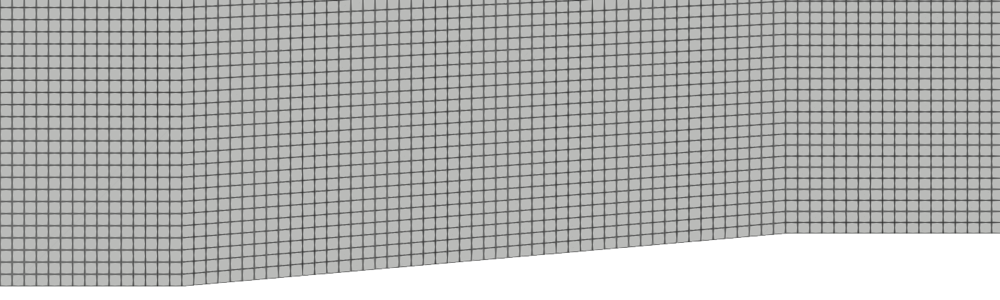
Figura 2.La malla gruesa (d = 0.02 m) alrededor de las dos esquinas. Vista en ParaView, de x = 0.7 a 2.35 m. Tres bloques de cuadriláteros: en el de la rampa, las columnas siguen siendo verticales y las filas se inclinan poco a poco, desde los 5° de la pared hasta la horizontal del techo. Las celdas son casi cuadradas en todo el dominio.
rampa.geo
// Rampa de compresión y expansión para OpenFOAM (shockFluid), malla 2.5D estructurada
// Placa plana, rampa de ángulo th y meseta: un choque oblicuo en la primera esquina
// y un abanico de Prandtl-Meyer en la segunda. Unidades: metros.
// Se puede cambiar cualquier parámetro desde la terminal: gmsh rampa.geo -setnumber d 0.01 -3
DefineConstant[ th = 5 ]; // ángulo de la rampa (grados)
DefineConstant[ L1 = 1 ]; // placa plana antes de la rampa
DefineConstant[ Lr = 1 ]; // largo de la rampa, medido sobre su superficie
DefineConstant[ L3 = 1 ]; // meseta después de la segunda esquina
DefineConstant[ H = 1 ]; // altura del dominio sobre la placa
DefineConstant[ d = 0.01 ]; // tamaño de celda (cuadrada lejos de la rampa)
e = 0.01; // espesor de la extrusión (una sola celda)
t = th*Pi/180;
x2 = L1 + Lr*Cos(t); y2 = Lr*Sin(t); // segunda esquina
x3 = x2 + L3;
Point(1) = {0, 0, 0};
Point(2) = {L1, 0, 0}; // esquina de compresión
Point(3) = {x2, y2, 0}; // esquina de expansión
Point(4) = {x3, y2, 0};
Point(5) = {x3, H, 0};
Point(6) = {x2, H, 0};
Point(7) = {L1, H, 0};
Point(8) = {0, H, 0};
Line(1) = {1, 2}; Line(2) = {2, 3}; Line(3) = {3, 4}; // pared
Line(4) = {4, 5}; // salida
Line(5) = {5, 6}; Line(6) = {6, 7}; Line(7) = {7, 8}; // techo
Line(8) = {8, 1}; // entrada
Line(9) = {2, 7}; Line(10) = {3, 6}; // divisiones entre bloques
Curve Loop(1) = {1, 9, 7, 8}; Plane Surface(1) = {1}; // bloque de la placa
Curve Loop(2) = {2, 10, 6, -9}; Plane Surface(2) = {2}; // bloque de la rampa
Curve Loop(3) = {3, 4, 5, -10}; Plane Surface(3) = {3}; // bloque de la meseta
nx1 = Round(L1/d); nx2 = Round((x2 - L1)/d); nx3 = Round(L3/d); ny = Round(H/d);
Transfinite Curve{1, 7} = nx1 + 1;
Transfinite Curve{2, 6} = nx2 + 1;
Transfinite Curve{3, 5} = nx3 + 1;
Transfinite Curve{8, 9, 10, 4} = ny + 1;
Transfinite Surface{1, 2, 3};
Recombine Surface{1, 2, 3};
ext[] = Extrude {0, 0, e} { Surface{1, 2, 3}; Layers{1}; Recombine; };
// ext[]: para cada superficie, [tapa, volumen, cara sobre la 1.ª curva, 2.ª, 3.ª, 4.ª]
Physical Surface("inlet") = {ext[5]};
Physical Surface("outlet") = {ext[15]};
Physical Surface("walls") = {ext[2], ext[8], ext[14]};
Physical Surface("top") = {ext[4], ext[10], ext[16]};
Physical Surface("frontAndBack") = {1, 2, 3, ext[0], ext[6], ext[12]};
Physical Volume("fluid") = {ext[1], ext[7], ext[13]};
Mesh.MshFileVersion = 2.2; // gmshToFoam lee el formato 2
Por qué celdas cuadradas y un dominio de 1 m de alto. Lo que decide la calidad del resultado es cuántas celdas hay entre la rampa y el choque, en la dirección y. Al final de la rampa esa distancia es de unos 18 cm: con d = 0.02 m caben nueve celdas; con 0.005 m, treinta y seis. Un dominio más alto sólo agregaría celdas en la corriente libre, donde no pasa nada. El 2.1 de la serie de Gmsh enseña a construir este archivo paso a paso.
constant/physicalProperties: el gas normalizado
constant/physicalProperties
FoamFile
{
format ascii;
class dictionary;
location "constant";
object physicalProperties;
}
// * * * * * * * * * * * * * * * * * * * * * * * * * * * * * * * * * * * * * //
thermoType
{
type hePsiThermo;
mixture pureMixture;
transport const;
thermo hConst;
equationOfState perfectGas;
specie specie;
energy sensibleInternalEnergy;
}
mixture
{
// normalised gas
specie
{
molWeight 11640.3;
}
thermodynamics
{
Cp 2.5;
hf 0;
}
transport
{
mu 0;
Pr 1;
}
}
// ************************************************************************* //
No es aire en unidades del SI: es un gas elegido para que las cuentas salgan sencillas. Con la constante universal de OpenFOAM, 8314.47 J/(kmol·K), y molWeight 11640.3,
Con T = 1, la velocidad del sonido vale \(a = \sqrt{\gamma R T} = 1\), así que la magnitud de la velocidad es directamente el número de Mach: U = (5 0 0) es Mach 5. Y con p = 1, la densidad de la corriente libre vale \(\rho_1 = p/(RT) = 1.4\). hePsiThermo con perfectGas y hConst es un gas ideal de calores específicos constantes; mu 0 anula la viscosidad.
laminar significa sin modelo de turbulencia; como la viscosidad es cero, las ecuaciones que se resuelven son las de Euler.
0/: el estado inicial y las condiciones de frontera
Todo el dominio arranca con la corriente libre (p = 1, T = 1, U = (5 0 0)). Las condiciones de frontera siguen la regla del flujo supersónico: en una entrada supersónica se fija todo, en una salida supersónica no se fija nada, porque las perturbaciones sólo viajan aguas abajo (tabla 5).
Parche (tipo en la malla)
p
T
U
Por qué
inlet (patch)
1
1
(5 0 0)
flujo supersónico entrante: las tres características entran al dominio
outlet (patch)
gradiente cero
gradiente cero
gradiente cero
flujo supersónico saliente: ninguna información vuelve hacia adentro
walls (wall)
gradiente cero
gradiente cero
slip
pared sin fricción: el flujo no la atraviesa, pero se desliza
top (symmetryPlane)
symmetryPlane
symmetryPlane
symmetryPlane
frontera lejana sin flujo a través
frontAndBack (empty)
empty
empty
empty
la malla es 2D: una sola celda de espesor
Tabla 5.Condiciones de frontera. Una entrada supersónica fija todo; una salida supersónica no fija nada. El techo es un plano de simetría, es decir, una pared sin fricción lejos del fenómeno.
slip en la pared anula la componente normal de la velocidad y deja libre la tangencial: es la condición de una pared sin fricción. Los nombres de los parches tienen que ser exactamente los de constant/polyMesh/boundary, que vienen de los grupos físicos de rampa.geo.
fluxScheme Kurganov calcula los flujos en las caras con el esquema central-contra-el-viento de Kurganov y Tadmor, que OpenFOAM implementa como describen Greenshields et al. (2010). Los valores a cada lado de una cara se reconstruyen con el limitador de van Leer (reconstruct(rho), reconstruct(U), reconstruct(T)): de segundo orden donde el campo es suave, pero cerca de un choque el limitador baja a primer orden para no crear oscilaciones. Por eso, en un flujo con choques, lo que cabe esperar al refinar la malla es convergencia de primer orden.
diagonal para la densidad: se avanza de forma explícita, sin sistema que resolver. Los solvers de U y e sólo trabajarían en los términos viscosos, que aquí no existen; por eso la salida de foamRun los muestra también como diagonal.
system/controlDict: el paso de tiempo y lo que se escribe
system/controlDict
FoamFile
{
format ascii;
class dictionary;
location "system";
object controlDict;
}
// * * * * * * * * * * * * * * * * * * * * * * * * * * * * * * * * * * * * * //
solver shockFluid;
startFrom startTime;
startTime 0;
stopAt endTime;
endTime 1.5;
deltaT 1e-4;
writeControl adjustableRunTime;
writeInterval 0.1;
purgeWrite 0;
writeFormat ascii;
writePrecision 8;
writeCompression off;
timeFormat general;
timePrecision 6;
runTimeModifiable true;
adjustTimeStep yes;
maxCo 0.2; // con 0.5 aparecen ondas espurias y la malla fina revienta
maxDeltaT 1;
functions
{
#includeFunc MachNo // escribe el campo Ma
#includeFunc region2 // promedios en la región 2 (system/region2)
#includeFunc region3 // promedios en la región 3 (system/region3)
#includeFunc lineas // p, T y Ma sobre y = 0.2 m y y = 0.5 m (system/lineas)
}
// ************************************************************************* //
solver shockFluid: el solver de flujo compresible con choques de OpenFOAM 12; foamRun lo lee de aquí.
endTime 1.5: el flujo recorre los 3 m del dominio a velocidad 5 en 0.6 unidades de tiempo; con 1.5 se da tiempo de sobra a que el estado transitorio de arranque salga del dominio.
adjustTimeStep yes y maxCo 0.2: el paso de tiempo se ajusta solo para que el número de Courant máximo sea 0.2. No conviene subirlo a 0.5: aparecen ondas espurias y la malla fina revienta (sección «Errores frecuentes»).
maxDeltaT 1: un techo para el paso de tiempo que nunca se alcanza. El tutorial de fábrica trae 1e-06, que con adjustTimeStep frenaría la corrida sin avisar.
writeInterval 0.1: una carpeta de resultados cada 0.1 unidades de tiempo, quince en total.
functions: cuatro funciones que corren junto con el solver cada vez que escribe. MachNo, de OpenFOAM, escribe el campo Ma; las otras tres son propias de este caso.
system/region2 y system/region3: los promedios de cada región
Para comparar con la teoría hacen falta los valores de p, T, ρ, U y M en el centro de cada región, lejos del choque, del abanico y de las esquinas. Un solo punto no basta: en la malla gruesa, dentro de la región 2, la presión varía ±4 % de una celda a otra. Estas dos funciones promedian 18 celdas de cada región (volFieldValue con select points: las celdas que contienen 18 puntos). Los puntos están a 30, 50 y 70 % de la altura de cada región:
Puntos de la región 2
\[ y = (x-1)\tan\theta + f\,(x-1)\left(\tan\beta-\tan\theta\right) \tag{8} \]
Puntos de la región 3
\[ y = y_2 + f\,(x-x_2)\tan\mu_3 \tag{9} \]
con x = 1.4, 1.5, …, 1.9 m en la región 2 y x = 2.5, 2.59, …, 2.95 m en la región 3; f = 0.3, 0.5 y 0.7 en las dos; \((x_2, y_2)\) = (1.9962, 0.0872) la segunda esquina y \(\mu_3 = \arcsin(1/M_3)\) = 11.58° el ángulo de la última onda del abanico. Cada vez que escribe, la función agrega una fila a postProcessing/region2/0/volFieldValue.dat (y lo mismo con region3).
system/region2
FoamFile
{
format ascii;
class dictionary;
location "system";
object region2;
}
// * * * * * * * * * * * * * * * * * * * * * * * * * * * * * * * * * * * * * //
// Promedio de los campos en el centro de la región 2, entre la rampa y el choque.
// Se promedian las celdas que contienen estos 18 puntos:
// x de 1.4 a 1.9 m, al 30, 50 y 70 % de la distancia entre la rampa y el choque.
// Uso: foamPostProcess -func region2 -latestTime -> postProcessing/region2/<tiempo>/volFieldValue.dat
#includeEtc "caseDicts/functions/volFieldValue/volAverage.cfg"
executeControl writeTime;
writeControl writeTime;
select points;
points
(
(1.40 0.057 0.005)
(1.40 0.071 0.005)
(1.40 0.086 0.005)
(1.50 0.071 0.005)
(1.50 0.089 0.005)
(1.50 0.107 0.005)
(1.60 0.085 0.005)
(1.60 0.107 0.005)
(1.60 0.129 0.005)
(1.70 0.099 0.005)
(1.70 0.125 0.005)
(1.70 0.150 0.005)
(1.80 0.114 0.005)
(1.80 0.143 0.005)
(1.80 0.172 0.005)
(1.90 0.128 0.005)
(1.90 0.161 0.005)
(1.90 0.193 0.005)
);
fields (p T rho U Ma);
// ************************************************************************* //
system/lineas: dos rectas a través del choque
system/lineas
FoamFile
{
format ascii;
class dictionary;
location "system";
object lineas;
}
// * * * * * * * * * * * * * * * * * * * * * * * * * * * * * * * * * * * * * //
// Presión, temperatura y número de Mach a lo largo de dos rectas horizontales, de la entrada a la
// salida (601 puntos, uno cada 5 mm): y = 0.2 m, que cruza el choque y el abanico, y y = 0.5 m, la
// más alta que todavía cruza el choque dentro del dominio (el choque sale por x = 3 a y = 0.54 m).
// Uso: foamPostProcess -func lineas -latestTime -> postProcessing/lineas/<tiempo>/y02.xy y y05.xy
// Columnas de cada archivo: x, p, T, Ma.
#includeEtc "caseDicts/functions/graphs/graph.cfg"
fields (p T Ma);
sets
(
y02
{
type lineUniform;
axis x;
start (0 0.2 0.005);
end (3 0.2 0.005);
nPoints 601;
}
y05
{
type lineUniform;
axis x;
start (0 0.5 0.005);
end (3 0.5 0.005);
nPoints 601;
}
);
// ************************************************************************* //
Escribe p, T y Ma en 601 puntos a lo largo de y = 0.2 m, que cruza el choque y el abanico, y de y = 0.5 m, la recta más alta que todavía cruza el choque dentro del dominio. De ahí sale el ángulo del choque.
Allrun
Allrun
#!/bin/sh
# Uso: ./Allrun [d] (tamaño de celda en metros: 0.02, 0.01 o 0.005; por omisión 0.01)
cd ${0%/*} || exit 1
. $WM_PROJECT_DIR/bin/tools/RunFunctions
d=${1:-0.01}
command -v gmsh > /dev/null || {
echo "No se encuentra gmsh: agregue su carpeta al PATH, por ejemplo"
echo ' export PATH="$PATH:/c/gmsh-4.15.2-Windows64"'
exit 1
}
gmsh rampa.geo -setnumber d $d -3 -o rampa.msh > log.gmsh 2>&1 || exit 1
runApplication gmshToFoam rampa.msh
foamDictionary constant/polyMesh/boundary -entry entry0/walls/type -set wall
foamDictionary constant/polyMesh/boundary -entry entry0/top/type -set symmetryPlane
foamDictionary constant/polyMesh/boundary -entry entry0/frontAndBack/type -set empty
runApplication checkMesh
runApplication foamRun
runApplication, de OpenFOAM, corre cada programa y guarda su salida en log.<programa>. Si ese log ya existe, no vuelve a correr el programa y sólo avisa «foamRun already run on …: remove log file 'log.foamRun' to re-run». Para repetir el caso desde cero hay que borrar antes los log.*, o partir de una copia limpia.
Resultados
Ver los resultados en ParaView
ParaView sirve para ver el flujo y comprobar que tiene la forma esperada. Las cifras de la validación no se leen aquí, sino de los archivos de la sección siguiente.
Abrir el caso
En la terminal, dentro de la carpeta del caso, paraFoam. Responde «Created temporary 'rampa.foam'» y abre ParaView con el caso en el Pipeline Browser (figura 3).
Hacer clic en Apply. ParaView lee la malla y el primer tiempo, y colorea por p.
Hacer clic en Last Frame (el botón ⏭ de la barra de tiempo): el tiempo pasa a 1.5.
Hacer clic en -Z en la barra de la cámara: la vista mira el plano x-y de frente. Reset Camera encuadra el dominio, y la rueda del ratón acerca (figura 4).
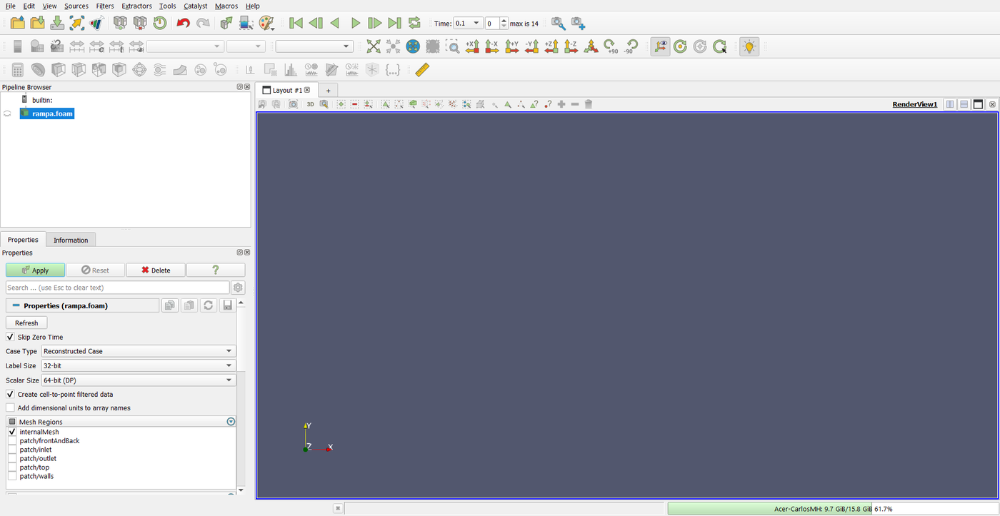
Figura 3.ParaView, recién abierto con paraFoam. El caso aparece como rampa.foam (el nombre de la carpeta; paraFoam crea ese archivo vacío y lo borra al cerrar) en el Pipeline Browser, y el botón Apply está en verde: todavía no se ha leído nada. Skip Zero Time está marcado, por eso el tiempo arranca en 0.1 (el primero que escribió foamRun).
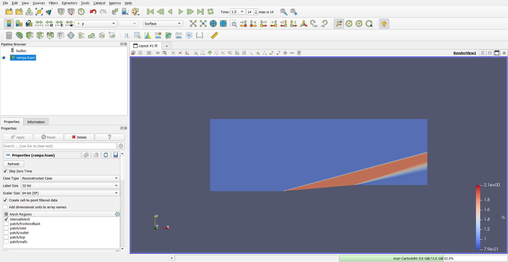
Figura 4.El campo de presión a t = 1.5, en la malla fina. Después de Apply, el último tiempo y la vista −Z. ParaView colorea solo por p. Se ven el choque, que nace en la primera esquina, y el abanico, que abre la presión alta de la región 2 en la segunda.
Se ven las tres regiones de la figura 1: la corriente libre en azul, la región 2 en rojo sobre la rampa, limitada por un choque recto que nace en la esquina, y la región 3 sobre la meseta, detrás del abanico, que abre la región 2 en la segunda esquina.
El número de Mach
En el desplegable de variables de la barra de herramientas (el que dice p), elegir Ma.
Hacer clic en Rescale to Data Range, a la izquierda del desplegable, para que la escala de colores vaya del mínimo al máximo de Ma (figura 5).
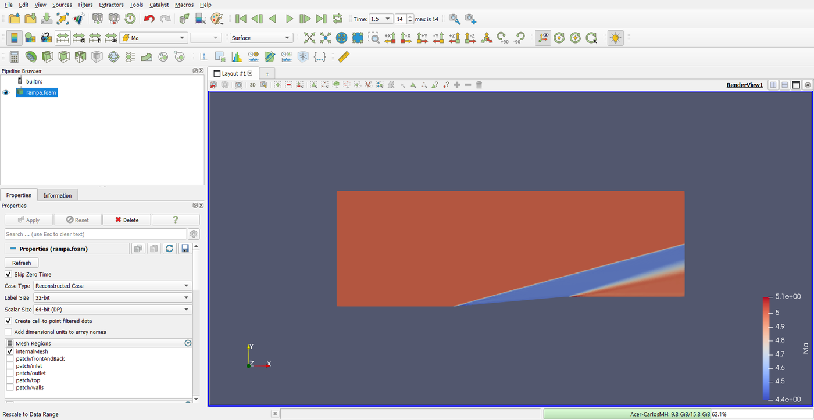
Figura 5.El número de Mach, con la escala ajustada a los datos. El campo Ma lo escribe la función MachNo del controlDict. La región 2 queda en azul (M ≈ 4.49) y la 3 vuelve a rojo, pero sin llegar al valor de la corriente libre: M₃ = 4.98, no 5.
La presión a lo largo de una recta
Con rampa.foam seleccionado en el Pipeline Browser, Filters ▸ Data Analysis ▸ Plot Over Line (figura 6).
En Properties, escribir Point1 = 0, 0.2, 0.005 y Point2 = 3, 0.2, 0.005. La recta aparece en la vista (figura 7).
Hacer clic en Apply. La ventana se divide y a la derecha aparece una gráfica con todas las variables.
Para dejar sólo la presión: escribir series en el buscador de Properties, desmarcar la casilla del encabezado de la tabla Series Parameters (desmarca todas) y marcar p, que está al final de la lista (figura 8).
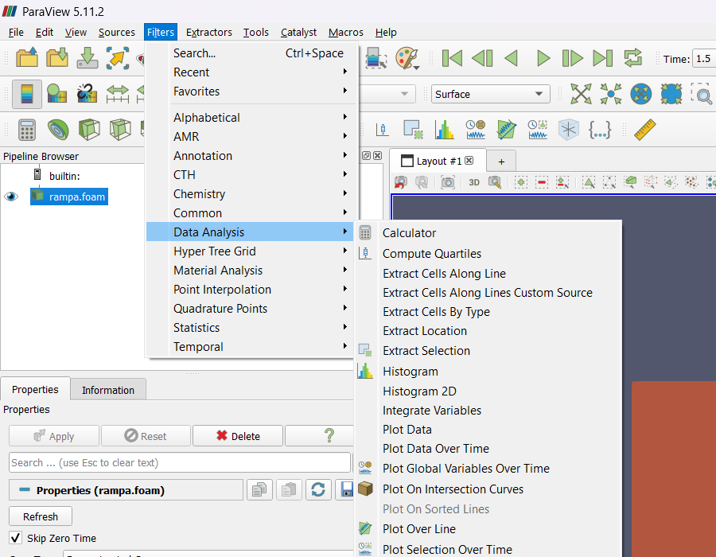
Figura 6.Filters ▸ Data Analysis ▸ Plot Over Line. En ParaView 5.11.2 el filtro está en este submenú; también se encuentra con Ctrl+Espacio y su nombre.
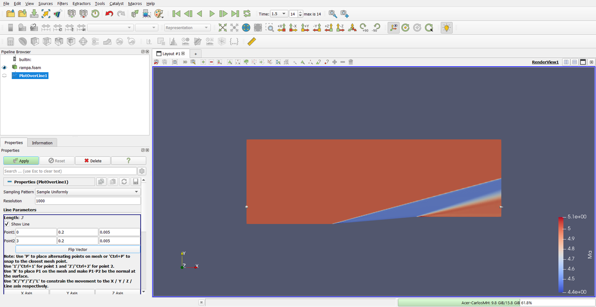
Figura 7.La recta de muestreo, antes de Apply.Point1 = (0, 0.2, 0.005) y Point2 = (3, 0.2, 0.005): la recta y = 0.2 m, a la mitad del espesor de la malla. En la vista aparece como una línea blanca con sus dos extremos.
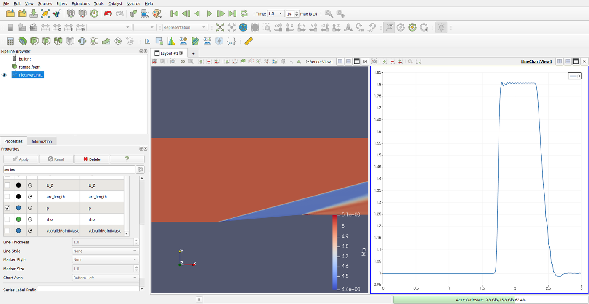
Figura 8.La presión a lo largo de y = 0.2 m, sólo con p. En la tabla Series Parameters (buscador del panel: «series»), la casilla del encabezado desmarca todas las series y luego se marca p. El eje horizontal es la distancia desde Point1, que aquí coincide con x. El salto está cerca de x = 1.74 m y la caída del abanico termina cerca de x = 2.55 m.
La gráfica tiene la forma de la teoría: presión de corriente libre, un salto casi vertical en el choque hasta 1.8, una meseta y una caída continua a través del abanico. Los picos pequeños justo detrás del choque son oscilaciones que el esquema no alcanza a amortiguar en tres o cuatro celdas.
Ejemplo resuelto
Validación y convergencia de malla
Enunciado. Comprobar que la simulación reproduce la solución analítica de la tabla 3 y medir cuánto depende el resultado de la malla. Condiciones: el caso sin cambios, con d = 0.02, 0.01 y 0.005 m; los valores se toman a t = 1.5.
Dónde están los números
Al terminar foamRun, la carpeta postProcessing tiene tres subcarpetas, una por función. En region2/0/volFieldValue.dat, la última fila es la de t = 1.5. Para la malla de 0.01 m:
De esa fila salen todas las propiedades de la región 2, relativas a la corriente libre (p₁ = 1, T₁ = 1, ρ₁ = 1.4, |U₁| = 5):
\(p_2/p_1\) = 1.8111 y \(T_2/T_1\) = 1.1942, directamente.
\(\rho_2/\rho_1\) = 2.1232 / 1.4 = 1.5166.
\(|U_2| = \sqrt{U_x^2+U_y^2}\) = 4.9075, así que \(|U_2|/|U_1|\) = 0.9815; el ángulo del flujo es \(\arctan(U_y/U_x)\) = 5.049°.
\(M_2\) = 4.4909, directamente (campo Ma).
\(p_{0,2}/p_{0,1}\), con la ecuación (5): 1.8111 × [(1 + 0.2 × 4.4909²)/(1 + 0.2 × 5²)]3.5 = 0.9795.
Lo mismo con region3 para la región 3.
La presión total no se pide a OpenFOAM. OpenFOAM 12 tiene una función totalPressureCompressible, pero calcula \(p + \tfrac{1}{2}\rho|U|^2\), la presión total de un flujo incompresible. A Mach 5 da \(p_0/p\) = 18.5 en lugar de 529. La presión total isentrópica se calcula aparte, con la ecuación (5).
El ángulo del choque
En lineas/1.5/y02.xy y y05.xy están x, p, T y Ma a lo largo de las dos rectas. En cada una se busca dónde cruza la presión el valor intermedio entre la corriente libre y la región 2, \((1 + p_2/p_1)/2\) = 1.4055, interpolando entre los dos puntos que lo encierran. Con la malla de 0.01 m, el choque cruza y = 0.2 m en x = 1.7427 y y = 0.5 m en x = 2.8495 m, así que
Se usan dos rectas, y no una sola con el vértice en la esquina, porque cerca de la esquina el choque todavía se está formando; y tan separadas como se puede, porque el cruce se ubica con una precisión de media celda, que pesa menos cuanto mayor sea la distancia entre las rectas.
Las tres mallas
Sólo cambia el número después de -setnumber d (o el argumento de Allrun). Conviene una copia del caso por malla (cp -r rampa rampa_d0.02, etc.). La tabla 6 muestra lo que cuesta cada una.
d (m)
Celdas
Pasos de tiempo
Δt al final
Tiempo
No ortogonalidad máx.
0.02
7 500
2 176
6.94·10−4
12 s
4.95°
0.01
30 000
4 340
3.40·10−4
89 s
4.97°
0.005
119 800
8 668
1.74·10−4
16.2 min
4.99°
Tabla 6.Las tres mallas. Cifras de checkMesh y de foamRun en una laptop con Intel Core i7-11800H, un solo núcleo, OpenFOAM 12 de blueCFD-Core 2024. El tiempo incluye Gmsh y todos los pasos de Allrun.bat. Al dividir d entre dos, las celdas se multiplican por cuatro y los pasos de tiempo por dos: el costo, por ocho o más.
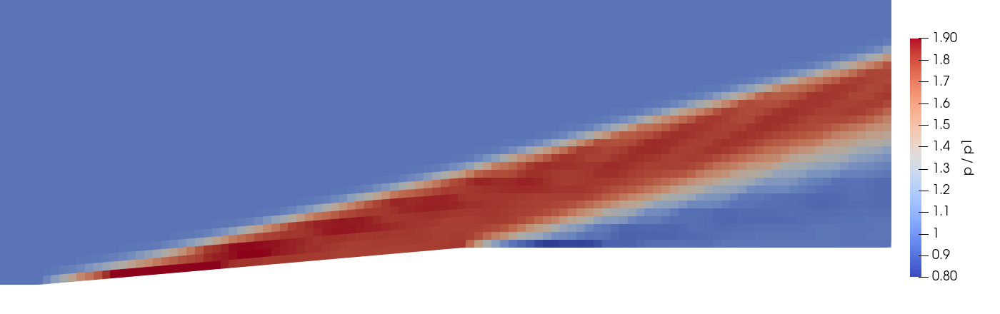
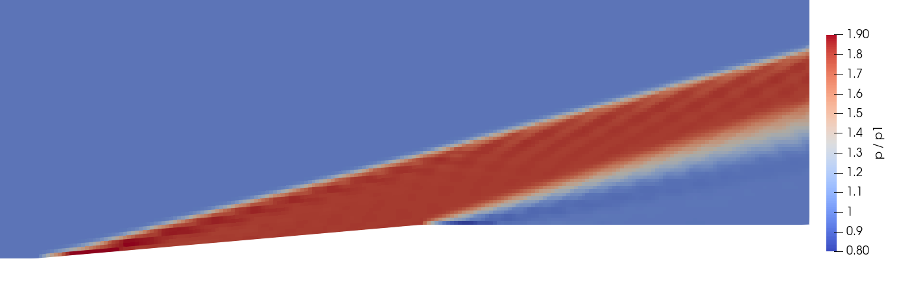
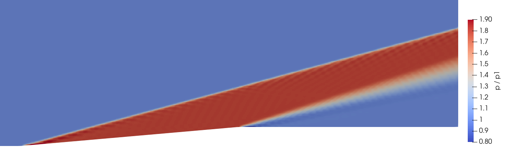
Figura 9.La presión en las tres mallas, con la misma escala. De arriba abajo, d = 0.02, 0.01 y 0.005 m; de x = 0.9 a 3 m y de y = 0 a 0.6 m. Al refinar, el choque se afila (se difunde siempre en tres o cuatro celdas, que son cada vez más angostas), la región 2 se vuelve uniforme y desaparece la sobrepresión junto a la primera esquina. La discontinuidad vertical de la malla gruesa en x ≈ 2 es el borde entre dos bloques de la malla, no un fenómeno físico.Figura 10.La presión sobre y = 0.2 m, contra la teoría. Curvas de postProcessing/lineas/1.5/y02.xy de cada malla. La teoría (negro) salta en el choque y cae de forma continua a través del abanico, que en esta recta ocupa de x = 2.35 a 2.55 m.
La tabla 7 reúne las quince magnitudes de las tres mallas y su error contra la teoría.
Propiedad
Teoría
d = 0.02 m
d = 0.01 m
d = 0.005 m
Error 0.02
Error 0.01
Error 0.005
\(\beta\)
15.073°
15.380°
15.166°
15.090°
+2.04 %
+0.62 %
+0.12 %
\(p_2/p_1\)
1.8057
1.8399
1.8111
1.8045
+1.89 %
+0.30 %
−0.07 %
\(T_2/T_1\)
1.1910
1.1992
1.1942
1.1921
+0.69 %
+0.26 %
+0.09 %
\(\rho_2/\rho_1\)
1.5161
1.5342
1.5166
1.5138
+1.19 %
+0.03 %
−0.15 %
\(M_2\)
4.4932
4.4837
4.4909
4.4917
−0.21 %
−0.05 %
−0.03 %
\(|U_2|/|U_1|\)
0.9807
0.9820
0.9815
0.9808
+0.13 %
+0.08 %
+0.01 %
ángulo 2
5.000°
5.165°
5.049°
4.998°
+0.17°
+0.05°
−0.00°
\(p_{0,2}/p_{0,1}\)
0.9793
0.9862
0.9795
0.9769
+0.70 %
+0.02 %
−0.25 %
\(p_3/p_1\)
0.9995
0.9741
0.9920
0.9994
−2.54 %
−0.75 %
−0.02 %
\(T_3/T_1\)
1.0059
1.0018
1.0064
1.0075
−0.41 %
+0.05 %
+0.16 %
\(\rho_3/\rho_1\)
0.9937
0.9724
0.9857
0.9920
−2.15 %
−0.81 %
−0.18 %
\(M_3\)
4.9825
4.9832
4.9788
4.9775
+0.01 %
−0.08 %
−0.10 %
\(|U_3|/|U_1|\)
0.9994
0.9975
0.9989
0.9992
−0.19 %
−0.05 %
−0.02 %
ángulo 3
0.000°
−0.216°
−0.055°
−0.004°
−0.22°
−0.05°
−0.00°
\(p_{0,3}/p_{0,1}\)
0.9793
0.9552
0.9677
0.9735
−2.46 %
−1.19 %
−0.60 %
Tabla 7.Validación: las tres mallas contra la teoría. Valores a t = 1.5 leídos de postProcessing/region2, region3 y lineas, y error contra la Tabla 3: en porcentaje, salvo los ángulos del flujo, en grados. \(\beta\) se mide con las dos rectas; \(\rho/\rho_1\) usa \(\rho_1 = 1.4\); \(p_0/p_{0,1}\) se calcula con la ecuación (5).
Qué dice la tabla
Con la malla fina, todo queda dentro del 0.25 %, salvo la presión total de la región 3 (−0.60 %). Con la malla gruesa los errores llegan al 2–3 %: el choque se difunde en tres o cuatro celdas, que en la malla gruesa son 6–8 cm, una fracción grande de la región 2.
La presión total es la prueba más exigente. Derivando la ecuación (5), \(\mathrm{d}(\ln p_0) = \mathrm{d}(\ln p) + \frac{\gamma M}{1+\frac{\gamma-1}{2}M^2}\,\mathrm{d}M\), y a M = 4.49 el factor vale 1.25: un error de 0.03 % en M₂ (0.0015) pesa 0.19 % en \(p_{0,2}\).
El esquema genera entropía que la física no genera. En la malla fina, T sale un poco alta y ρ un poco baja en las dos regiones, a la misma presión: hay más entropía que en la teoría. Y en la región 3 hay más que en la 2 —\(p_{0,3}\) = 0.9735 contra \(p_{0,2}\) = 0.9769, cuando la teoría dice que son iguales—: el esquema la crea en la esquina de expansión y en el abanico, donde el flujo real es isentrópico.
Convergencia: la presión total de la región 3
El error de \(p_{0,3}/p_{0,1}\) se reduce a la mitad con cada refinamiento: −2.46 %, −1.19 % y −0.60 % (figura 11). Es el comportamiento de un error de primer orden, proporcional a d, el que se espera de un esquema cuyo limitador baja a primer orden en los choques. Si el error es \(e = C\,d\), dos mallas de razón 2 bastan para eliminarlo (extrapolación de Richardson; Roache, 1994):
Extrapolación de Richardson de primer orden
\[ f_0 \approx 2\,f(d/2) - f(d) \tag{10} \]
donde \(f(d)\) es el valor calculado con la malla de tamaño d y \(f_0\), el que se obtendría con una malla infinitamente fina.
Con las mallas de 0.01 y 0.005 m: 2 × 0.97349 − 0.96770 = 0.97928, contra 0.97934 de la teoría: una diferencia de 0.005 %.
Figura 11.La presión total en la región 3: convergencia de primer orden. Error de \(p_{0,3}/p_{0,1}\) contra la teoría en cada malla. Los tres puntos caen casi sobre una recta que pasa por el origen: el error es proporcional a d. Extrapolando a d = 0 con la ecuación (10) (círculo azul) el error desaparece.
La pérdida del choque es física; la de más es numérica. La presión total cae 2.07 % en el choque, y esa caída sobrevive a cualquier refinamiento: es la entropía del choque. Lo que el esquema agrega encima es proporcional al tamaño de celda y desaparece al extrapolar a d = 0.
Las demás magnitudes no sirven para esto. Entre la malla media y la fina su error cae más rápido que d o cambia de signo, porque ya toca el piso de la medición, alrededor del 0.1 % (dónde se ubica el choque, cuánto oscila todavía el flujo): con la ecuación (10), \(p_2/p_1\) se pasaría a 1.7979 (teoría 1.8057). El orden de convergencia calculado con tres mallas sale entre 1.1 y 3.3 según la magnitud; como número, no dice mucho.
¿Llegó el flujo al estado estacionario?
Los residuos no lo dicen (valen 0 en cada paso), pero los archivos de region2 y region3 tienen una fila por cada tiempo escrito. En las tres mallas, el promedio de la región 2 queda dentro del 0.5 % de su valor final desde t = 0.3, y el de la región 3 desde t = 0.5. Después sólo oscila: 0.3 % en la malla gruesa, 0.2 % en la media y 0.07 % en la fina. endTime 1.5 deja un margen amplio.
Registro de resultados
Malla
\(\beta\)
\(p_2/p_1\)
\(M_2\)
\(p_3/p_1\)
\(p_{0,3}/p_{0,1}\)
Tiempo
Teoría
15.07°
1.8057
4.493
0.9995
0.9793
—
d = 0.02 m
d = 0.01 m (referencia)
15.17°
1.8111
4.491
0.9920
0.9677
89 s
d = 0.005 m
Tabla 8.Registro del estudio de convergencia. Las filas de la malla de 0.01 m son la referencia de esta guía; las otras dos las llena el alumno con sus propias corridas. Basta con estas cinco magnitudes para contestar las preguntas.
Preguntas que orientan la lectura
¿Qué magnitud converge primero y cuál al último? ¿Por qué la presión total de la región 3 es la más exigente de todas?
La malla gruesa difunde el choque en unos 6 cm. ¿Por qué eso cambia mucho el β medido y la presión de la región 2, pero poco M₂?
De 0.01 a 0.005 m, el tiempo de cómputo se multiplicó por diez. ¿Cuánto bajó el error de β y el de \(p_{0,3}\)? ¿Valdría la pena una cuarta malla de 0.0025 m?
Con la ecuación (10) y sus propias corridas, extrapole \(p_{0,3}/p_{0,1}\). ¿Qué parte de la pérdida de presión total es física y qué parte numérica?
En la simulación, \(p_{0,3} < p_{0,2}\). ¿Por qué la teoría dice que son iguales, y qué hace el esquema en la segunda esquina para que no lo sean?
Errores frecuentes
Qué sale mal y qué dice OpenFOAM
Una malla que no resuelve la capa de choque
El caso original, del que salió este tutorial, usaba un dominio de 3 × 3 m con 147 × 49 celdas: Δx = 0.020 m, pero Δy = 0.061 m. Entre la rampa y el choque, al final de la rampa, cabían tres celdas. El choque se difunde en tres o cuatro, así que la región 2 nunca llegaba a formarse: en su centro el flujo giraba 3.3° en lugar de 5°, y la presión subía a 1.69 en lugar de 1.81 (valores medidos en OpenFOAM 13 durante la preparación de esta guía). La malla de 0.02 m de este tutorial tiene casi las mismas celdas (7 500 contra 7 203) y sí forma la región 2: lo que importa no es cuántas celdas hay, sino dónde están. El 95 % de las celdas del caso original estaba en la corriente libre, donde no pasa nada.
maxCo 0.5: ondas que no existen
Con maxCo 0.5 la corrida tarda la mitad (43 s contra 86 s en la malla de 0.01 m) y termina sin ningún aviso. Pero un tren de ondas recorre la región 2 y sale por la salida sin amortiguarse (figura 12): entre t = 1.4 y 1.5, la presión cambia hasta 0.83 en una celda (con 0.2, hasta 0.09), y 3 487 celdas cambian más de 0.05 (con 0.2, 130). Lo engañoso es que los promedios por región casi no cambian: una tabla de promedios no basta; hay que mirar el campo.
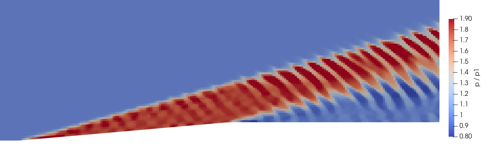
Figura 12.El mismo caso con maxCo 0.5 (arriba) y 0.2 (abajo). Malla de 0.01 m, t = 1.5, misma escala que la Figura 9. Con 0.5, un tren de ondas que no existe en la física recorre la región 2 y sale por la salida sin amortiguarse.
En la malla fina es peor: la corrida revienta en t = 0.269. blueCFD no da un mensaje de error de OpenFOAM, sino una excepción de punto flotante dentro del limitador de van Leer:
(fragmento: se omiten las líneas module: y el resto de la pila). La causa es la misma: con un paso de tiempo demasiado grande, el esquema produce un estado no físico —en OpenFOAM 13 el mensaje es «Negative initial temperature T0»— y el cálculo se detiene.
maxDeltaT 1e-06: una corrida que nunca termina
El tutorial de fábrica trae adjustTimeStep no y maxDeltaT 1e-06. Si sólo se cambia lo primero, el paso de tiempo queda topado en 10−6, con un número de Courant de 0.0003: en 20 segundos, la malla gruesa avanza hasta t = 0.004. Llegar a 1.5 tomaría unas dos horas. No hay ningún aviso; la única pista es el Courant diminuto de cada paso.
Tipos de parche sin corregir
Si se omite el paso 7 de la receta, checkMesh da «Mesh OK», pero con una línea distinta: «Mesh has 3 geometric (non-empty/wedge) directions (1 1 1)», es decir, trata la malla como 3D. foamRun se detiene al leer la primera condición de frontera que no cuadra:
--> FOAM FATAL IO ERROR:
patch type 'patch' not constraint type 'empty'
for patch frontAndBack of field T in file "D:/blueCFD-Core/2024/ofuser-of12/RUN/rampa-errores/tipos/0/T"
Un nombre de parche que no coincide
Si en 0/U la pared se llama, por ejemplo, pared en vez de walls:
Ojo con un caso que no falla: si se llama wall, sin la s, la corrida termina normalmente, porque OpenFOAM mete todo parche de tipo wall en un grupo llamado wall, y una entrada con el nombre del grupo se aplica a todos sus parches. Aquí da lo mismo, pero con dos paredes que necesitaran condiciones distintas sería un error silencioso.
Gmsh no se encuentra
«bash: gmsh: command not found» significa que falta el paso 3 de la receta: la terminal de blueCFD arranca con una ruta de búsqueda propia, sin los programas instalados aparte. Hay que repetirlo cada vez que se abre la terminal.
Puntos de región fuera de la malla
Si cambia la geometría (otro ángulo, otra altura), los puntos de region2 y region3 pueden caer fuera del dominio. foamRun no se detiene: avisa y promedia las celdas que sí encontró.
--> FOAM Warning :
From function void Foam::polyCellSet::setCells()
in file sets/polyCellSet/polyCellSet.C at line 75
Unable to find owner cell for point (1.4 0.057 0.005)
Con la rampa de 10° y los puntos de 5°, la región 2 se promediaba con 12 celdas en lugar de 18, y la región 3 con menos aún. Hay que recalcular los puntos con las ecuaciones (8) y (9).
Práctica sugerida
La rampa de 10°
Enunciado. Repetir la validación con una rampa de 10°. Con el doble de desviación, el choque es más fuerte, la pérdida de presión total pasa de 2.1 % a 12.8 %, y se ve con claridad que el abanico no deshace el choque. Condiciones: el mismo caso, con -setnumber th 10; mallas de 0.01 y 0.005 m; valores a t = 1.5.
El procedimiento, en corto
Con las ecuaciones (1) a (7), calcular la teoría para θ = 10°: β = 19.38°, \(M_2\) = 3.999, \(M_3\) = 4.880, y el resto.
Copiar el caso a una carpeta nueva y hacer la malla con gmsh rampa.geo -setnumber th 10 -setnumber d 0.01 -3 -o rampa.msh. Allrun no pasa el ángulo: seguir los pasos 6 a 9 de la receta a mano.
Recalcular los 18 puntos de system/region2 con la ecuación (8) y β = 19.376°, y los de system/region3 con la ecuación (9), \((x_2, y_2)\) = (1.9848, 0.1736) y \(\mu_3\) = 11.825°. Si se olvida este paso, foamRun avisa «Unable to find owner cell for point».
Correr, leer los promedios y las rectas como en el ejemplo resuelto, y repetir con 0.005 m. En la laptop de referencia, la malla fina de 10° tardó unos 18 minutos.
Registro de resultados
Propiedad
Teoría
Simulación, d = 0.01 m
Simulación, d = 0.005 m
\(\beta\)
19.38°
19.43°
19.39°
\(p_2/p_1\)
3.0437
3.0261
3.0405
\(M_2\)
3.999
3.992
3.994
\(p_{0,2}/p_{0,1}\)
0.8725
0.8593
0.8656
\(p_3/p_1\)
1.0049
0.9963
1.0060
\(T_3/T_1\)
1.0412
1.0466
1.0471
\(M_3\)
4.880
4.865
4.865
\(p_{0,3}/p_{0,1}\)
0.8725
0.8499
0.8578
Tabla 9.La rampa de 10°: teoría y referencia. Teoría con las ecuaciones (1) a (7); la simulación, con el caso sin cambios salvo -setnumber th 10 en Gmsh y los puntos de region2 y region3 recalculados para 10° (ecuaciones (8) y (9)).
Preguntas que orientan la lectura
Compare la región 3 con la corriente libre: \(p_3/p_1\), \(T_3/T_1\), \(M_3\) y \(p_{0,3}/p_{0,1}\). ¿Qué recupera el abanico y qué no?
El error de \(p_{0,3}\) en la malla fina es mayor que a 5°. ¿Qué relación tiene eso con la entropía que genera el esquema en un choque y un abanico más fuertes?
Con la ecuación (1), busque la desviación máxima para la que existe un choque oblicuo pegado a la esquina a Mach 5 (debe dar 41.1°). ¿Qué esperaría ver en la simulación con una rampa de 45°, y qué parte de la teoría de este tutorial dejaría de valer?
Apéndice
De dónde salen las fórmulas
La relación θ–β–M
A través de un choque oblicuo, la componente de la velocidad paralela al choque no cambia (no hay fuerza en esa dirección), y la componente normal cumple las relaciones del choque normal con \(M_{n1} = M_1 \sin\beta\). Con \(w\) la componente paralela y \(u\) la normal, antes y después del choque:
(la segunda igualdad es la conservación de la masa, \(\rho_1 u_1 = \rho_2 u_2\)). Despejando \(\tan\theta\) con la identidad de la tangente de una diferencia se llega a la ecuación (1).
La función de Prandtl-Meyer
Un giro infinitesimal \(\mathrm{d}\theta\) a través de una onda de Mach cambia la velocidad en \(\mathrm{d}V/V = \mathrm{d}\theta/\sqrt{M^2-1}\). Con la relación isentrópica entre \(V\) y \(M\), \(\mathrm{d}V/V = \mathrm{d}M/\left[M\left(1+\frac{\gamma-1}{2}M^2\right)\right]\), el giro total desde Mach 1 es
cuya integral es la ecuación (6). Un giro θ que se aleja del flujo lleva de \(\nu(M_2)\) a \(\nu(M_2)+\theta\).
Las cifras de la teoría
Las tablas 2 y 3 se calcularon con un programa corto de Python que resuelve la ecuación (1) por bisección entre \(\mu_1\) y 90° —la primera raíz es la solución débil— y la ecuación (6) por bisección en M. Con una hoja de cálculo se obtiene lo mismo con «Buscar objetivo».
Fuentes
Referencias
Ames Research Staff (1953). Equations, tables, and charts for compressible flow. NACA Report 1135.
Anderson, J. D. (2003). Modern compressible flow: with historical perspective (3.ª ed.). McGraw-Hill. Capítulos 3 y 4: choques normales y oblicuos, ondas de expansión de Prandtl-Meyer.
Greenshields, C. J., Weller, H. G., Gasparini, L. y Reese, J. M. (2010). Implementation of semi-discrete, non-staggered central schemes in a colocated, polyhedral, finite volume framework, for high-speed viscous flows. International Journal for Numerical Methods in Fluids, 63(1), 1–21.
Kurganov, A. y Tadmor, E. (2000). New high-resolution central schemes for nonlinear conservation laws and convection–diffusion equations. Journal of Computational Physics, 160(1), 241–282.
Roache, P. J. (1994). Perspective: a method for uniform reporting of grid refinement studies. Journal of Fluids Engineering, 116(3), 405–413.
van Leer, B. (1974). Towards the ultimate conservative difference scheme. II. Monotonicity and conservation combined in a second-order scheme. Journal of Computational Physics, 14(4), 361–370.
OpenFOAM 12: el tutorial tutorials/shockFluid/wedge15Ma5 y el código de shockFluid, tal como los instala blueCFD-Core 2024.
Todas las cifras de la simulación salen de corridas de OpenFOAM 12 (blueCFD-Core 2024) en una laptop con Windows 11, leídas de los archivos que escribe el propio caso; las de la teoría, de las ecuaciones (1) a (7). Las capturas son de ParaView 5.11.2, el que instala blueCFD-Core.
Lernziele
Was Sie danach können sollten
Vollständige deutsche Übersetzung in Vorbereitung. Jeder Abschnitt enthält eine Zusammenfassung; der vollständige Text mit Abbildungen und Tabellen liegt in der spanischen Fassung vor, die über die Schaltfläche ES oben erreichbar ist.
Einen reibungsfreien Überschallfall in OpenFOAM 12 (blueCFD-Core 2024 unter Windows) aus einem Gmsh-Netz rechnen; alle Größen hinter einem schrägen Stoß und einem Prandtl-Meyer-Fächer von Hand bestimmen; dieselben Größen aus Dateien lesen, die OpenFOAM schreibt; und die numerische Lösung mit einer Konvergenzstudie auf drei Netzen beurteilen, einschließlich der Rolle des Zeitschritts.
Das Problem
Was simuliert wird
Eine ebene Platte, eine 1 m lange Rampe unter 5° und ein 1 m langes Plateau in einem 1 m hohen Gebiet; Zuströmung mit Mach 5 im „normierten Gas“ des Tutorials wedge15Ma5. Gebiet 2 liegt hinter dem Stoß, Gebiet 3 hinter dem Fächer; beide treffen sich im Rechengebiet nicht.
Die Theorie
Die Theorie, die die Simulation wiedergeben muss
Die θ-β-M-Beziehung liefert β = 15,07°; die Beziehungen des senkrechten Stoßes mit Mn1 = M1 sin β liefern p, T, ρ und M im Gebiet 2; die Prandtl-Meyer-Funktion liefert M3 = 4,98, die isentropen Beziehungen den Rest. Der Fächer bringt den Druck auf p1 zurück, nicht aber den Totaldruck: p0 fällt am Stoß um 2,07 % und bleibt dort.
Schritt für Schritt
Vom Netz zu den Ergebnissen
Im blueCFD-Core-Terminal (eine bash-Shell): Gmsh zum PATH hinzufügen, der dort fehlt, mit gmsh -setnumber d vernetzen, mit gmshToFoam umwandeln, die Patch-Typen mit foamDictionary setzen, mit checkMesh prüfen, foamRun starten und paraFoam öffnen. ./Allrun erledigt alles in einem Befehl.
Der Fall
Der Fall, Datei für Datei
Jede Datei des Falls vollständig: die parametrische rampa.geo; das normierte Gas (molWeight 11640,3 und Cp 2,5 ergeben γ = 1,4 und a = 1, also bedeutet U = 5 Mach 5); Überschall-Ein- und Auslass, Gleitwand und Symmetrieebene; der Kurganov-Fluss mit van-Leer-Rekonstruktion; der adaptive Zeitschritt mit maxCo 0,2; und drei eigene Funktionen, die jedes Gebiet mitteln und zwei Linien abtasten.
Ergebnisse
Die Ergebnisse in ParaView
paraFoam, Apply, der letzte Zeitschritt, die Ansicht −Z; Druck- und Machzahlfeld; und Plot Over Line entlang y = 0,2 m nur mit p, als Sichtprüfung von Stoß und Fächer.
Durchgerechnetes Beispiel
Validierung und Netzkonvergenz
Die drei Netze gegen die Theorie für fünfzehn Größen. Auf dem feinsten Netz liegen alle Größen innerhalb von 0,25 %, außer dem Totaldruck im Gebiet 3 (−0,60 %). Dieser Fehler halbiert sich mit jeder Verfeinerung, und eine Richardson-Extrapolation erster Ordnung trifft die Theorie auf 0,005 %: Der Stoßverlust ist physikalisch, die zusätzliche Entropie des Verfahrens proportional zur Zellgröße.
Häufige Fehler
Was schiefgeht und was OpenFOAM meldet
Ein Netz, das die Stoßschicht zu grob auflöst; maxCo 0,5, das Störwellen hinterlässt und das feine Netz mit einer Gleitkomma-Ausnahme abbrechen lässt; das maxDeltaT von 1e-06 der Vorlage; Patch-Namen oder -Typen, die nicht passen (mit den genauen Meldungen); Gmsh fehlt im PATH von blueCFD; Gebietspunkte außerhalb des Netzes; und totalPressureCompressible, das den inkompressiblen Totaldruck berechnet.
Übungsvorschlag
Die 10°-Rampe
Die Studie mit einer 10°-Rampe wiederholen: β = 19,38°, p2/p1 = 3,04 und ein Totaldruckverlust von 12,8 %, groß genug, um zu sehen, dass der Fächer den Stoß nicht rückgängig macht. Dann den größten Umlenkwinkel bei Mach 5 suchen, bevor der Stoß abhebt (41,1°).
Anhang
Woher die Formeln stammen
Die Herleitung der θ-β-M-Beziehung aus dem senkrechten Stoß, der Prandtl-Meyer-Funktion aus einer infinitesimalen Umlenkung und des normierten Gases.
Quellen
Literatur
Andersons Modern Compressible Flow und NACA Report 1135 für die Theorie; die Quellen von OpenFOAM 12 und die Arbeiten zu Kurganov-Tadmor und van Leer für die Numerik; Roache für Netzverfeinerungsstudien.